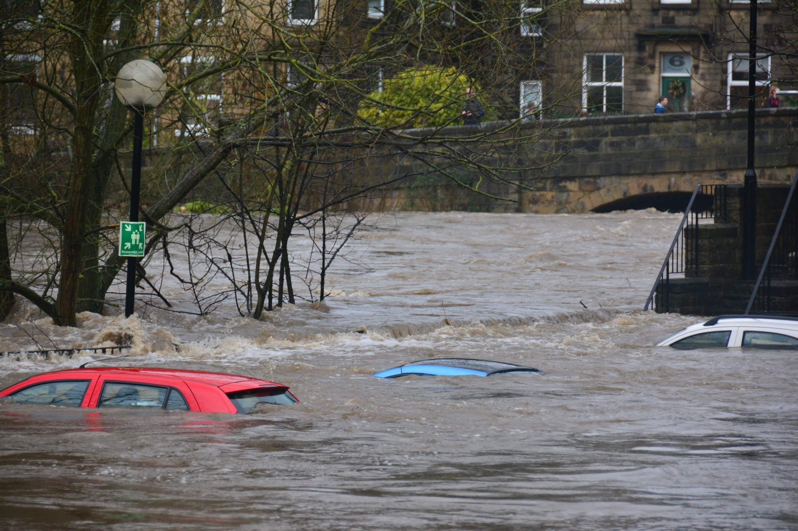
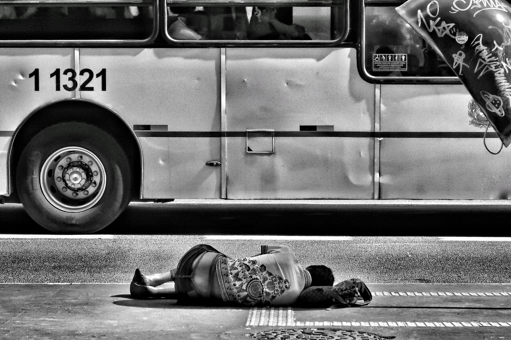

What is Poverty?
Poverty is a state or condition in which a person or community lacks the financial resources and essentials for a minimum standard of living. Poverty means that the income level from employment is so low that basic human needs can't be met. Poverty-stricken people and families might go without proper housing, clean water, healthy food, and medical attention. Each nation may have its own threshold that determines how many of its people are living in poverty.

Natural Causes
Natual cuases can interfere with a anyone, enexpecteedly. For example, natural disasters. Natural disasters are unpredictable and they can cause people to lose their homes and families. This will result in low income and poverty.
Human causes
Human causes are what people in a higher position do in order to benefit them, but it may lead other people to poverty. For example, the government closes a company. All the employees in the company will lose their jobs. They won't be able to get a job easily.
